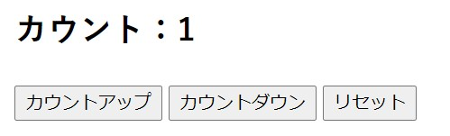
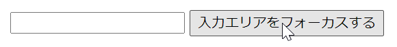
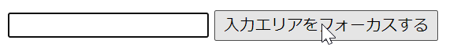

React hooks とは、クラスコンポーネントを使用せずに state などの React の機能を使うための機能です。
メリットとしてクラスコンポーネントを使用せず関数コンポーネントを使用することから、constructor での state 定義や this による複雑化がなくなりコードが読みやすくなります。
useState
関数コンポーネント専用の保存領域を作成してもらい、そのデータを読み書きできる hook です。
関数コンポーネントのトップレベルで宣言します。
const [変数, 変数の値を変更するための関数] = useState(変数の初期値);
例えば、
const [count, setCount] = useState(0); setCount(10);
のように使用し、この場合は初期の count が 0 で setCount で 10 を代入したことになります。
useEffect
レンダリング後に処理を走らせたいときに使用する hook です。
クラスコンポーネントの componentDidMount、componentDidUpdate、componentWillUnmount の役割があります。
関数コンポーネントのトップレベルで宣言します。
useEffect(() => {
//第1引数は関数を記述
},[第2引数:関数に依存する変数や配列]);
第 2 引数が変更されたときに再レンダリングのあと、第 1 引数が実行されます。
例えば先ほどの useState と一緒に使用して下記の状況があったとします。
const [count1, setCount1] = useState(0);
const [count2, setCount2] = useState(0);
useEffect(()=>{
console.log(`useEffectが実行されました。counter1 = ${count1}`);
},[count1]);
<p>Counter1: {count1}</p>
<button onClick="setCount1(count1 + 1)">Increment count1</button>
<p>Counter2: {count2}</p>
<button onClick="setCount2(count2 + 1)">Increment count2</button>
Increment count1, 2 というボタンをクリックすると count1, 2 に対応した Counter が 1 加算されるという単純なコードです。
今回 Increment count1 を 3 回、Increment count2 を 5 回クリックするとします。
まずこのコードによってコンポーネントがレンダリングされたとき、useEffect は実行されます。その後 Increment count1 をクリックすると、count1 が更新されるので再レンダリングが行われます。そして useEffect の第 2 引数に count1 が設定されているので useEffect が実行されます。3 回クリックすることで最初のレンダリング含め合計 4 回 useEffect が実行されます。また、Increment count2 をクリックした際は count2 は第 2 引数に関係ないため、何度クリックしても useEffect は実行されません。
また、第 2 引数で記述した変数等は第 1 引数で使用しないことも可能です。その場合単純に useEffect を作動させたいトリガーとして第 2 引数に値を設定しておくということになります。
先ほどの例の useEffect の第 2 引数に空の配列を渡したとします。
useEffect(()=>{
console.log('useEffectが実行されました');
},[]);
こうした場合は、useEffect は初回のレンダリングのみ実行されることになります。
また、useEffect の第 2 引数に何も渡さず省略したとします。
useEffect(()=>{
console.log('useEffectが実行されました');
});
こうした場合は、useEffect は初回のレンダリング含め再レンダリングが行われる度に実行されることになります。
useContext
コンポーネント間のデータの受け渡しで使用する hook です。
親コンポーネントで使用していたデータは props を介して子コンポーネントに渡すことが多いですが、useContext を使用することで層が深くても渡すことなく参照できることが強みです。
例として、App、ComponentA, B, C の 4 種類のコンポーネントがあり、App から ComponentC に 100 という数値を useContext を使用して渡すことを目的とします。親が App で順に A, B, C です。
import React from 'react';
import ComponentA from './components/ComponentA.js'
export const UserCount = React.createContext()
function App() {
return (
<div style={{ textAlign: 'center' }}>
<h1>useContext</h1>
<UserCount.Provider value={100}>
<ComponentA/>
</UserCount.Provider>
</div>
);
}
export default App;
App から渡すための準備として、 Context の作成を行います。Context の作成は createContext で行います。そして、UserCount.Provider コンポーネントで値を渡したいコンポーネントが入っている ComponentA を囲みます(A から B、B から C と import しているため間接的に使用できるようになっている)。UserCount.Provider のタグの中では value に 100 の値を設定します。これで親コンポーネント側の準備が完了です。
import React from 'react'
import ComponentB from './ComponentB'
const ComponentA = () => {
return (
<div>
<p>Componet A</p>
<ComponentB />
</div>
)
}
export default ComponentA
UserCount.Provider で囲ったコンポーネントですが特に使用しない場合は何もする必要はありません。
import React from 'react'
import ComponentC from './ComponentC'
const ComponentB = () => {
return (
<div>
<p>Componet B</p>
<ComponentC />
</div>
)
}
export default ComponentB
こちらも何もする必要はありません。
import React,{useContext} from 'react'
import { UserCount } from '../App'
const ComponentC = () => {
const count = useContext(UserCount)
return (
<div>
<p>Componet C</p>
<p>{count}</p>
</div>
)
}
export default ComponentC
値を使用する ComponentC での設定をします。まず、useContext と UserCount (値が入っている) の import をします。useContext(UserCount) で UserCount から取り出した値を変数に代入します。そうすることで代入された変数を使用して UserCount の値が使えたことになります。
useReducer
useState と同様に state を管理することができる hook です。
複数の値を使用した複雑な state のロジックがある場合や、前の state の値に基づいて次の state を決定する場合などに useReducer を使用します。
const [state, dispatch] = useReducer(reducer関数, stateの初期値);
dispatch：reducer 関数を実行するための呼び出し関数
reducer 関数：dispatch で渡された情報をもとに処理を行う関数
例としてカウントアップ、カウントダウン、リセットの 3 種類のボタンと現在のカウントがいくつかを表示するコードがあったとします。
const initialState = 0
const reducerFunc = (countState, action)=> {
switch (action){
case 'increment':
return countState + 1
case 'decrement':
return countState - 1
case 'reset':
return initialState
default:
return countState
}
}
const Counter = () => {
const [count, dispatch] = useReducer(reducerFunc, initialState)
return (
<>
<h2>カウント：{count}</h2>
<Button onClick={()=>dispatch('increment')}>カウントアップ</Button>
<Button onClick={()=>dispatch('decrement')}>カウントダウン</Button>
<Button onClick={()=>dispatch('reset')}>リセット</Button>
</>
)
}

コードのイメージ
Button の onClick にはそれぞれ dispatch の引数に文字列が与えられています。この文字列は action になっていて、reducer 関数側でどのような操作を行うかの判別に使われます。例えばカウントアップをクリックした場合は increment が渡され、reducerFunc で case 'increment' の処理が実行されます。ここで返ってきた値は count に格納され、今回の場合は表示に使われることになります。
useCallback
関数を保持するための hook です。
通常の関数定義の場合だと再レンダリングの度に実行されますが、指定した変数が変更されていない場合はその必要はありません。
そのため useCallback を使用することで指定した変数が変更されたときのみ再計算を行うといった処理にできるのでパフォーマンス向上につながります。
useCallback(第1引数は関数を記述, [第2引数:関数に依存する変数や配列]);
第 2 引数の値が変更されない限りメモ化された関数を再利用します。
const [count1, setCount1] = useState(0);
const [count2, setCount2] = useState(0);
// Counter1 を +1 する関数を定義する。
const countUp1 = useCallback(() => {
setCount1(count1 + 1);
}, [count1]);
// Counter2 を +1 する関数を定義する。
const countUp2 = useCallback(() => {
setCount2(count2 + 1);
}, [count2]);
<p>Counter1: {count1}</p>
<button onClick={countUp1}>Increment count1</button>
<p>Counter2: {count2}</p>
<button onClick={countUp2}>Increment count2</button>
例えば、Counter1, 2 にそれぞれ対応したボタンがあり、ボタンをクリックすると useCallback による関数で値をインクリメントするコードがあるとします。Increment count1 をクリックした場合は countUp1 が呼ばれ count1 の値が変更されます。count1 が変更されたことにより、新たな変数データを持った関数をメモ化します。このとき再レンダリングは行われていますが count2 に値の変更はないため、countUp2 はメモ化されている関数を使用します。
useMemo
useCallback とは違い、関数の結果の値を保持するための hook です。
毎回結果が同じ場合の値などを保存してそこからデータを再取得することで不要な再計算を省略してパフォーマンス向上につながります。
useMemo(() => {
//第1引数は関数を記述
},[第2引数:関数に依存する変数や配列])
第 2 引数の値が変更されたときのみ再計算を行います。
例として下記のコードがあったとします。
const [count1, setCount1] = useState(0);
const [count2, setCount2] = useState(0);
// 引数の数値を2倍にして返す。
const double = count => {
let i = 0;
// 無駄に不要なループを実行させ計算に時間をかける。
while (i < 1000000000) i++;
return count * 2;
};
const doubledCount = useMemo(() => double(count2), [count2]);
<p>Counter1: {count1}</p>
<button onClick="setCount1(count1 + 1)">Increment count1</button>
<p>Counter2: {count2}, {doubledCount}</p>
<button onClick="setCount2(count2 + 1)">Increment count2</button>
Increment count1 と Increment count2 の 2 つのボタンがあり、Increment count1 をクリックすると count1 に 1 加算されて count1 を表示、Increment count2 をクリックすると count2 に 1 加算されて count2 と count2 を 2 倍した値を表示します。
今回 useMemo では、count2 を第 2 引数に指定しているため Increment count1 をクリックした場合 count2 は関係ないためメモ化した値をそのまま使用します(再計算の必要がないため高速)。Increment count2 をクリックした場合は第 2 引数に使用されているため再計算が行われます。
基本的にコストのかかる計算が含まれるときに使用します。低コストで使用すると余計にコストがかかることも考えられます。
useRef
useRef を使用すると ref オブジェクトが生成でき、これを HTML タグの ref 属性に設定すると DOM 操作が可能になります。
また、useState 同様、値を保持するのにも使用できます。値が変更されても再レンダリングが行われません。
const number = useRef(10); console.log(number.current); //100
useRef を状態保持の目的で使う場合は、引数に数字や文字列などを設定します。値は current プロパティに設定されます。
useRef を DOM 操作のために使う場合は、引数に null を設定します。
const App = () => {
const inputEl = useRef(null);
const handleClick = () => {
inputEl.current.focus();
};
return (
<>
<input ref={inputEl} type="text" />
<button onClick={handleClick}>入力エリアをフォーカスする</button>
</>
);
};
今回の例ではボタンをクリックすると input 要素にフォーカスがかかるものです。フォーカスをかけたい input 要素の ref 属性に useRef で作成したオブジェクトを指定します。ボタンをクリックすることで handleClick が呼ばれフォーカスがかかる流れになります。
ボタンクリック前
ボタンクリック後
REFFECT(関連する記事に各種あります)：https://reffect.co.jp/react
React hooksを基礎から理解する：https://qiita.com/seira/items/f063e262b1d57d7e78b4
【React】useEffectの第２引数って？：
https://qiita.com/k-penguin-sato/items/9373d87c57da3b74a9e6
React.memo / useCallback / useMemo の使い方、使い所を理解してパフォーマンス最適化をする：https://qiita.com/soarflat/items/b9d3d17b8ab1f5dbfed2